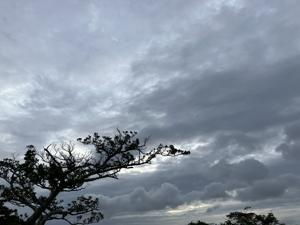

うるがいの話 ある日
最新: 訪問看護【うるがいの話 ある日】とは 一日だけのプログです
『うるがいの話』の最新一日だけのプログで、通信料が少なく経済的だ。カニの画像をクリックすると全ての日付が載る『うるがいの話』サイトを表示します
|
|
【うるがいの話】 うるがい(ｳﾙｶﾞｲ urugai)とは、『もずくがに』の名前でとても大きくなります。 |
|---|---|
|
|
【カミマヤーの話】 猫のことを方言でマヤーといいます。カミマヤー（kamimayaa）とは、神の猫のことです。 |
|
【たながぁの音楽】 たながぁ（ﾀﾅｶﾞｰ tanagaa）とは手長えびのことで、何種類かあり大きいのは車 エビぐらいになります。 |

|
【ぶながぁの話】 ぶながぁ(ﾌﾞﾅｶﾞｰ bunagaa)とは、赤い髪の毛、赤い身体、そして身長は１ｍ２０ｃｍ ぐらい、川の蟹を食べているの目撃された。場所は沖縄県国頭郡大宜味村のと ある村僕の隣近所に住んでいる爺さんから、聞いた話です。 |
|
|
【ギーマの話】 ギーマ(giima)とは、山原の里山に咲くスズランに似た、 花を付けます。実は食べられます、 気が付くと口の周りが紫になっています。 |
2024年10月24日 (木）訪問看護
18:10

１０時１９分、けたたましくあちらこちらでスマホのアラーム音が、病
院の待合室で鳴る。大雨警報の緊急速報だった。朝から大雨、その中を
８時１５分に家を出る。道が混んでいる中お義母さんを病院へ８時４５
分、着く。前回は、施設から歩行器を使っていたが今回は車椅子を利用
する。尿の検査があるのだけど、なかなかでない。ヨメが、焦って携帯
してるお茶を飲ませるため、ペットボトルをお義母さんに渡す、そして
検尿で渡された紙カップに、お茶を入れようとする。ギャー！とヨメが
叫ぶ。それに驚いたお義母さんの動作が止まった。やばかったゼ。
体重が２週間前に比べ、２キロ増えた。水分を出しきれないようだ、レ
ントゲンをみると胸の水が増えている。医者は、そのうち溺れた状態に
なり苦しみますと言う。血液検査のため、ベテランの看護婦が採血の注
射を行おうとするのだが、差し込む箇所が探せないと苦労する。２週間
前はサッと済んだのに、皮膚がむくんでいるからと。
それをみてて、哀れだった。尿は出ず、尿検査はパス、難儀した採血で
カリュームが８へ上がったいると言われた。ヤバイっす、もともとの診
察予定日、２週間後にはどうなっているのだろうか、医者と厳しい話を
する。
医者（医師会会長）の知りの訪問看護を紹介してもらうことになった。
お義母さんが穏やかになったように見える、反応が遅い。明らかに次の
ステップへ移行した。
１８時０５分 ビットコインの総資産 ￥２９、４２７（↓２０４）